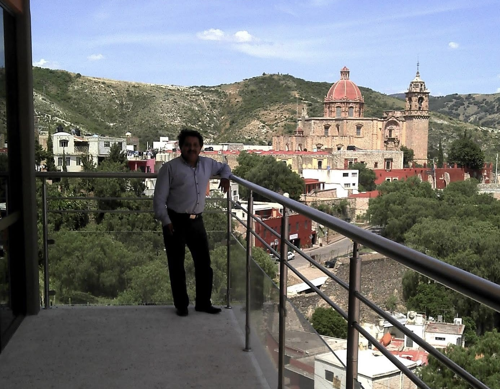

Sobre mí

L.B. José Ricardo Martínez Bravo es Jefe del Departamento de Biblioteca del Centro de Investigación en Matemáticas, A.C. (CIMAT), en Guanajuato, México. Se dedica al trabajo bibliotecario y a la gestión de información dentro de una comunidad académica de investigación, con el propósito de que el personal científico del centro pueda localizar, organizar y aprovechar los recursos que necesita para su trabajo.
A lo largo de más de cuarenta años en el oficio, ha pasado por bibliotecas universitarias, de enseñanza y de investigación, incluyendo la UNAM, el Centro de Información de BANCOMEXT, la Escuela Nacional de Biblioteconomía y Archivonomía y el CIMAT. Esa trayectoria le ha permitido conocer el trabajo bibliotecario desde el servicio al público, la adquisición, la administración y la docencia.
Su trabajo actual combina la coordinación del departamento con el acompañamiento a los usuarios en el acceso a la información. Los servicios que ofrece, así como la gestión documental que realiza, se detallan en la sección [Trabajo en la biblioteca].
Trayectoria profesional
Su trayectoria se ha desarrollado casi por completo en el ámbito bibliotecario mexicano, en instituciones públicas de educación e investigación. Ha combinado el servicio al público, la gestión de acervos, la coordinación de proyectos, la docencia y la representación institucional en redes de cooperación.
Ese recorrido le ha dado una visión integral del ciclo de la información: desde la atención al usuario hasta la descripción documental, la conservación y la difusión. El detalle de los puestos y las fechas se encuentra en la sección [Trayectoria].